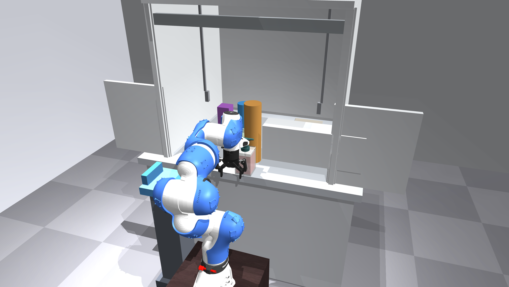
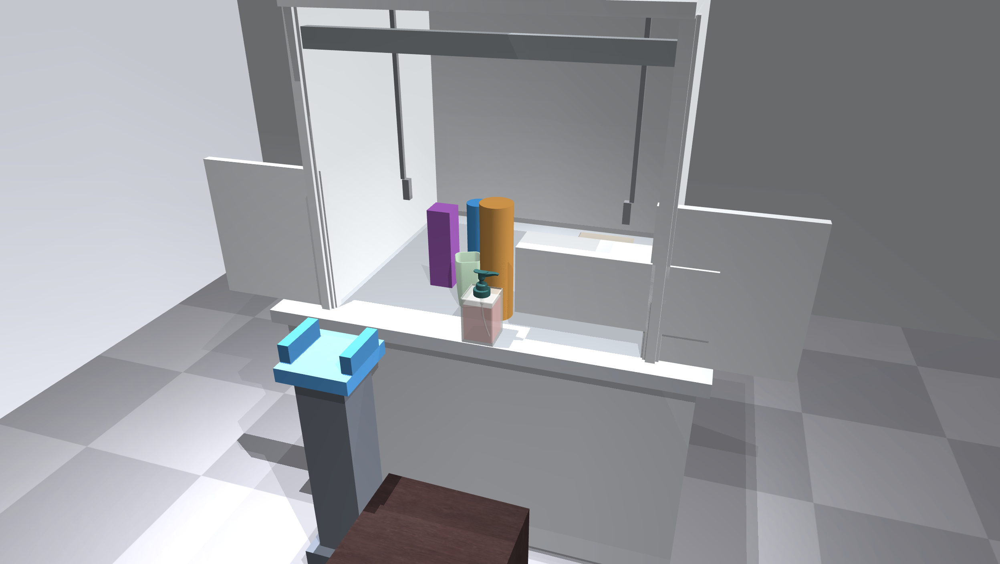
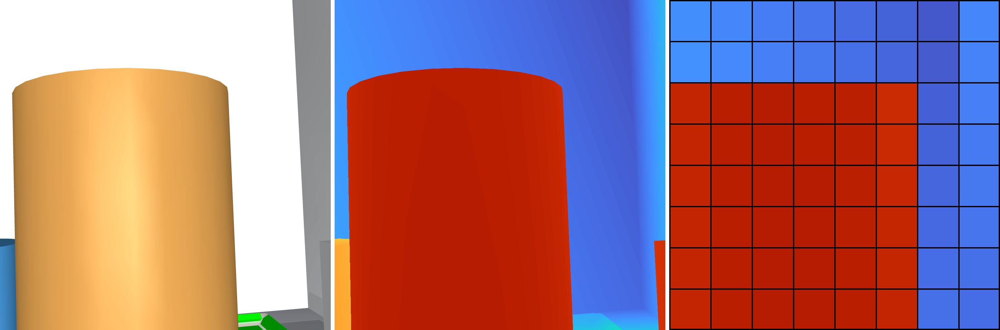
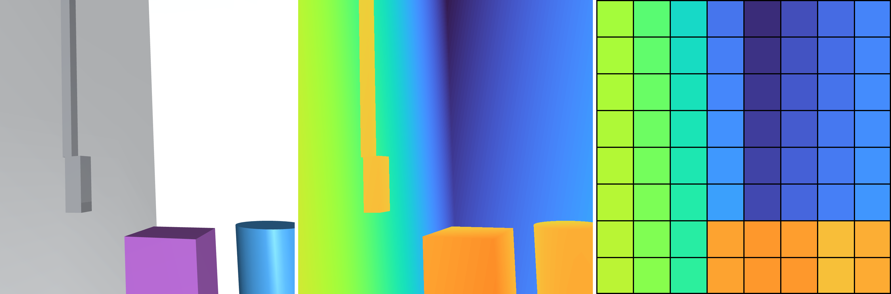
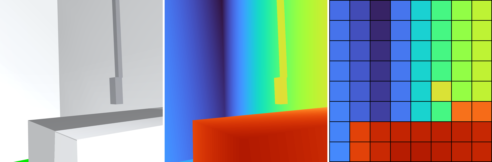
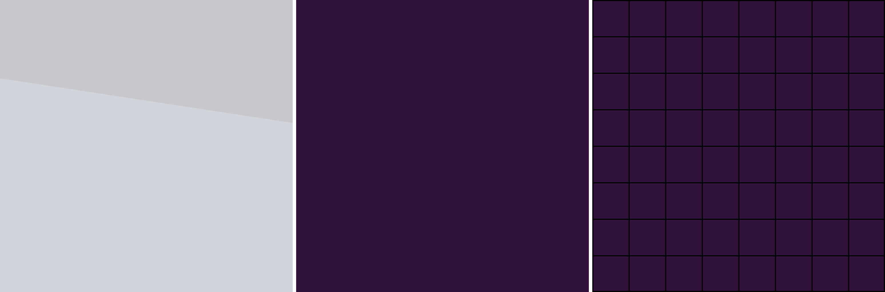
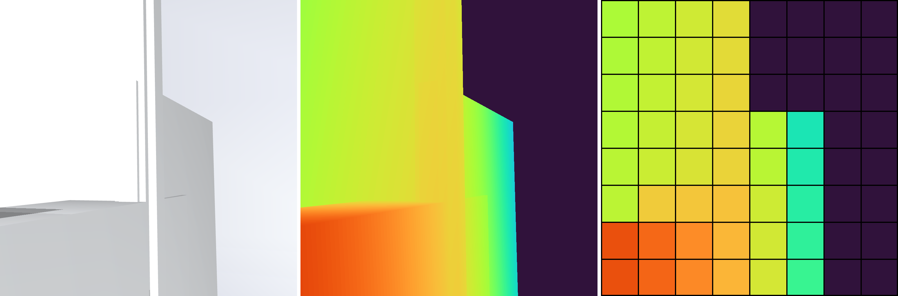
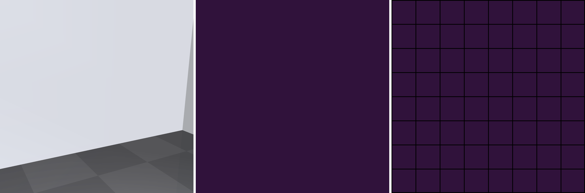

Adjusted simulation pose using original scene geometry. Each sensor row: RGB viewpoint / dense depth / native 8×8 simulated depth. Near red, far blue; 0.05–1.0 m. Exported images contain no text.







